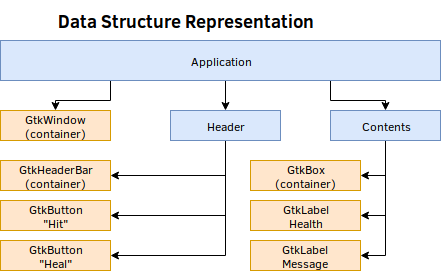

Gtk-Rust на примерах
Gtk-Rust by Example (GRBE) представляет собой неофициальную книгу по разработке GTK GUI, на языке программирования Rust, которая будет демонстрировать практическое использование библиотеки GTK на различных примерах.
Перед тем как начать, укажите версию библиотеки в вашем Cargo.toml файле:
[dependencies.gtk]
version = "0.3.0"
features = ["v3_22"]
Окно с панелью заголовка

Исходный код программы для этой главы можно найти здесь.
В этой главе мы создадим простое GTK приложение с панелью заголовка. Этот пример познакомит Вас с основами создания структуры приложения, которое будет содержать виджет и окно с заголовком.
Создание структуры приложения
Следующая диаграмма показывает, как мы будет проектировать структуру для нашего GTK приложения. Можно и не следовать этой диаграмме для достижения главного результата, однако, проектирование структуры пользовательского интерфейса может быть полезной пищей для ума.

В примере ниже, мы создадим структуру с GtkWindow и Header:
# #![allow(unused_variables)] #fn main() { extern crate gtk; use gtk::*; // Объявим структуру `Application`. pub struct Application { pub window: Window, pub header: Header, } #}
Header - это еще одна структура, которая будет содержать GtkHeaderbar и все виджеты внутри этой панели заголовка.
# #![allow(unused_variables)] #fn main() { // Объявим структуру `Header`. pub struct Header { pub container: HeaderBar, } #}
Создание пользовательского интерфейса (UI)
Далее, мы создадим интерфейс с помощью Rust и расположим его в "ново-объявленных" структурах.
Во-первых, структура нашего приложения будет содержать в себе все другие структуры нашего пользовательского интерфейса. В примере ниже находится код с комментариями, описывающие каждый метод, который мы будем использовать для конфигурации.
Мы создадим GtkWindow и "присоединим" каждый элемент UI. Структура Header будет распологать в себе другие GtkHeaderBar. Далее, напишем функцию для выхода из приложения.
Важно также установить описание для окна и wmclass, который будет отображаться оконными менеджерами, а с помощью функции Window::set_default_icon_name() настроим отображаемую иконку.
# #![allow(unused_variables)] #fn main() { // Блок реализации. impl Application { fn new() -> Application { // Создадим новое окно с типом `Toplevel`. let window = Window::new(WindowType::Toplevel); // Создадим панель заголовка и связанный с ним контент. let header = Header::new(); // Укажем название заголовка виджета. window.set_titlebar(&header.container); // Укажем название для окна приложения. window.set_title("Простая программа"); // Установим класс для оконного менеджера. window.set_wmclass("simple-gtk", "Простая программа"); // Установим иконку, отображаемую приложением. Window::set_default_icon_name("имя_иконки"); // Программа закроется, если нажата кнопка выхода. window.connect_delete_event(move |_, _| { main_quit(); Inhibit(false) }); // Возвращаем основное состояние приложения. Application { window, header } } } #}
Здесь распологается блок реализации для структуры Header, которая на данный момент содержит только GtkHeaderBar. Важно указать описание для этой панели заголовка, чтобы она отображалась, а также сделать активными элементы управления окном, поскольку они отключены по-умолчанию.
# #![allow(unused_variables)] #fn main() { impl Header { fn new() -> Header { // Создадим виджет контейнера для главной панели заголовка. let container = HeaderBar::new(); // Установим отображаемый тект в секции для названия. container.set_title("Simple GTK"); // Делаем активными элементы управления окна в этой панели. container.set_show_close_button(true); // Возвращаем заголовок и его состояние. Header { container } } } #}
Инициализация и запуск приложения
Теперь, когда мы готовы, нам нужно просто инициализировать GTK, создать структуру приложения, показать все виджеты внутри этой структуры и запустить главный цикл событий GTK.
fn main() { // Инициализация GTK. if gtk::init().is_err() { eprintln!("Не удалось инициализировать GTK приложение."); return; } // Инициализация начального состояния UI. let app = Application::new(); // Делаем видимыми все виджеты с UI. app.window.show_all(); // Запуск основного цикла GTK. gtk::main(); }
После того, как основной поток вошёл в цикл событий, он будет взаимодействовать с каждым вызваным виджетом для действий, например: метод connect_delete_event(), который мы использовали выше, чтобы запрограммировать кнопку выхода для закрытия программы.
Результат
После того, как вы написали код, соберите и запустите программу, которая выглядит вот так:
cargo build && cargo run
Боксирующие кнопки

Исходный код программы для этой главы можно найти здесь.
В этом разделе мы рассмотрим, как структурировать ваш UI с помощью упаковок (box), изменять метку (label) и запрограммировать нажатие по кнопке. А также, к концу вы поймёте, как:
- Добавлять дочерние элементы в панель заголовка;
- Добавлять классы стилей к кнопке;
- Управлять состоянием приложения с помощью атомарных счётчиков Arc и выравнивать виджеты внутри контейнера.
Напомним, что каждый GTK объект, который можно получить из контейнера gtk - заворачивают, так что не стоит беспокоится о правилах заимствования Rust. Объекты GTK считают ссылки, поэтому, когда вам нужно передать GTK объект через несколько замыканий, вы можете сделать это с помощью клонирования новой ссылки.
Необходимые знания
Прежде чем продолжить изучение урока, убедитесь что вы понимаете что такое атомарность и атомарный счётчик ссылок (Arc). Эти понятия критически важны для возможности разделять состояние между несколькими замыканиями или потоками.
Изучить этот вопрос можно в документации модулей std::sync и std::sync::atomic. Так же, вы можете ознакомиться с безблокировочной конкурентностью (lockless concurrency) в этом документе.
Упаковки, кнопки и метки
Цель этого раздела заключается в том, чтобы дать объяснение объектам, которые будут использованы до того, как мы применим их на практике в следующих разделах.
GtkBox
GtkBox является фактически эквивалентом UI вектора в Rust и должен быть объявлен с помощью Orientation, который определяет, что должны ли элементы быть выровнены слева направо или сверху вниз. Для тех, кто имеет опыт разработки с современным дизайном HTML5/CSS3, GtkBox эквивалентен гибким упаковкам -- они могут расширяться на всё пространство, а виджеты, содержащиеся внутри, тоже могут расширяться в соответствии с правилами, применяемыми при дочерней упаковке.
Создание упаковки
В следующем примере, мы создадим горизонтальную и вертикальную упаковку с нулевым отступом между дочерними элементами, содержащимися в упаковке. После создания упаковки, вы можете задать виджеты, ипсользуя метод pack_*.
# #![allow(unused_variables)] #fn main() { let padding_between_children = 0; let horizontal_box = Box::new(Orientation::Horizontal, padding_between_children); let vertical_box = Box::new(Orientation::Vertical, padding_between_children); #}
Упаковка упаковки
Вы могли заметить, что метод pack_* принимает большое количество параметров. Первым параметром должна быть ссылка на виджет, которую вы добавляете в контейнер. Вторым и третьим параметрами объявляют параметры заполнения соответственно. Последним параметром объявляют - как много единиц пространства должно быть между дочерними элементами в упаковке.
To further elaborate on the expand and fill parameters, expand defines whether the given widget should attempt to use all of the extra space that it can. Each widget that has the expand parameter set will equally share that extra space. Meanwhile, fill defines whether the extra spaced should actually have that widget fill to cover that extra space, or should merely use that extra space as padding.
# #![allow(unused_variables)] #fn main() { health_info.pack_start(&health_label, false, false, 5); health_info.pack_start(&health, true, true, 5); #}
GtkLabel
GtkLabel - это простой виджет, который состоит исключительно из текста. Название говорит само за себя. Всё, что вам нужно запомнить - это как создать метку (label) и изменить её.
# #![allow(unused_variables)] #fn main() { let information_label = Label::new("Specific Information: "); let value = Label::new("Linux"); value.set_label("Redox"); let horizontal_box = Box::new(Orientation::Horizontal, 5); horizontal_box.pack_start(&information_label, false, false, 0); horizontal_box.pack_start(&value, true, false, 0); #}
GtkButton
Создание кнопок
GtkButton - это простая кнопка, содержащая текстовую метку (label) и/или изображения для представления действия, которое должно быть выполнено при нажатии кнопки.
# #![allow(unused_variables)] #fn main() { let text_button = Button::new_with_label("Ok"); let image_button = Button::new_from_icon_name("имя-иконки", 32); #}
Дизайн кнопок
Виджеты в GTK можно оформить так, чтобы они отличались от других виджетов в пользовательском интерфейсе (UI). В частности, кнопки поддерживают два класса стилей: destructive-action и suggested-action. Если в вашем UI есть особенная кнопка, которая должна отличаться, вы можете установить её так:
# #![allow(unused_variables)] #fn main() { // Добавьте соответствующие классы стилей к этим кнопкам. delete_button.get_style_context().map(|c| c.add_class("destructive-action")); new_button.get_style_context().map(|c| c.add_class("suggested-action")); #}
Каждый GtkWidget предоставляет метод get_style_context(), который возвращает
Optiondestructive-action и suggested-action. Как правило, destructive action окрашивает кнопку в красный цвет, между тем, suggested action использует синий цвет. Актуальный цвет будет зависеть от того, какая тема GTK используется вами.
Сопровождение внешнего состояния
В этой главе у нас будет некоторое состояние, которым мы будем управлять с помощью UI. Поэтому нам необходим способ хранения и загрузки значения из этого состояния. Программа, которую мы хотим написать, имеет один компонент: значение здоровья.
Как оказалось, мы напрямую можем воспользоваться атомарными примитивами, таким как AtomicUsize, чтобы хранить значение для совместного использования нескольких неизменяемых замыканий. Этим атомарным значением можно управлять, не требуя изменяемого доступа к внутреннему значению. Таким образом, мы можем передавать неизменяемые ссылки на это значение и изменять его даже когда оно уже одолжено в нескольких местах одновременно.
# #![allow(unused_variables)] #fn main() { pub struct HealthComponent(AtomicUsize); #}
Пока мы здесь, можем продолжить и написать некоторую логику для этой структуры в блоке реализации, используя следующие методы для здоровья:initializing,subtracting и healing.
# #![allow(unused_variables)] #fn main() { impl HealthComponent { fn new(initial: usize) -> HealthComponent { HealthComponent(AtomicUsize::new(initial)) } fn get_health(&self) -> usize { self.0.load(Ordering::SeqCst) } fn subtract(&self, value: usize) -> usize { let current = self.0.load(Ordering::SeqCst); let new = if current < value { 0 } else { current - value }; self.0.store(new, Ordering::SeqCst); new } fn heal(&self, value: usize) -> usize { let original = self.0.fetch_add(value, Ordering::SeqCst); original + value } } #}
Создание структуры пользовательского интерфейса (UI)
Используя структуру предыдущей главы в качестве образца, мы можем расширить её, чтобы включить новые элементы UI, которые будем использовать в нашей программе. Важно отметить, что необходимо хранить только те элементы, которые вы собираетесь запрограммировать позже, после создания структуры UI.
В этой программе мы добавим два виджета GtkButtons к панели заголовка и воспользуемся вертикальным и горизонтальным элементом GtkBox с некоторыми метками (labels), чтобы отобразить информацию о текущем состоянии нашего приложения. Следующее изображение является нашей новой диаграммой структур.

Что означает следующее в Rust:
# #![allow(unused_variables)] #fn main() { pub struct App { pub window: Window, pub header: Header, pub content: Content, } pub struct Header { pub container: HeaderBar, pub hit: Button, pub heal: Button, } pub struct Content { pub container: Box, pub health: Label, pub message: Label, } #}
Создание структуры App
Следуя последнему уроку, начнём с нашей структуры App. Метод new() должен принимать ссылку на &HealthComponent в качестве вводимого значения в UI. Заметим, что мы добавили новую переменную content типа Context, которая принимает эту ссылку на health.
# #![allow(unused_variables)] #fn main() { impl App { fn new(health: &HealthComponent) -> App { // Создадим новое окно с типом `Toplevel`. let window = Window::new(WindowType::Toplevel); // Создадим заголовок и связанное с ним содержимое. let header = Header::new(); // Расположим содержимое в окне. let content = Content::new(health); // Установим панель заголовка как описание виджета. window.set_titlebar(&header.container); // Установим описание для окна. window.set_title("Боксирующие кнопки"); // Установим класс для оконного менеджера. window.set_wmclass("app-name", "Боксирующие кнопки"); // Установим иконку, отображаемую приложением. Window::set_default_icon_name("имя-иконки"); // Добавим коробку с содержимым в окно. window.add(&content.container); // Запрограммируем выход из программы при нажатии кнопки. window.connect_delete_event(move |_, _| { main_quit(); Inhibit(false) }); // Вернём состояние нашего приложения. App { window, header, content, } } } #}
Создание Header
Затем мы так же реализуем метод для нашего заголовка, который должен содержать два элемента GtkButtons -- кнопка удара и лечения. Также обратите внимание, что мы устанавливаем некоторые классы стилей этим кнопкам, чтобы дать им более информативную визуальную способность.
# #![allow(unused_variables)] #fn main() { impl Header { fn new() -> Header { // Создадим главный заголовочный бар содержащий виджет. let container = HeaderBar::new(); // Установим текст для отображения в секции для названия. container.set_title("Боксирующие кнопки"); // Сделаем активными элементы управления окна в этой панели. container.set_show_close_button(true); // Создадим кнопки: `ударить` и `лечить`. let hit = Button::new_with_label("Ударить"); let heal = Button::new_with_label("Лечить"); // Добавим соответствующие классы стилей к этим кнопкам. hit.get_style_context() .map(|c| c.add_class("destructive-action")); heal.get_style_context() .map(|c| c.add_class("suggested-action")); // Теперь добавим их в панель заголовка. container.pack_start(&hit); container.pack_end(&heal); // Вернём the header and all of it's state Header { container, hit, heal, } } } #}
Создание Content
Теперь пришло время создать содержимое для нашего окна. При создании своего интерфейса (UI) с древовидной диаграммой, вы почти достигните GtkBoxes. При инициализации, эта упаковка должна быть указана с Horizontal или Vertical оринтацией.
Безусловно, вы достигните виджета GtkBoxes для настройки UI. Он может быть создан с Horizontal или Vertical выравниванием. В эти упаковки вы добавите все ваши виджеты, где они будут сложены в соответствии с выравниванием упаковки, к которой они присоединены.
Мы должны создать вертикальную упаковку, которая содержит два дочерних элемента: вертикальный виджет GtkBox содержащий метку и значение, а затем ниже простой виджет GtkLabel.
# #![allow(unused_variables)] #fn main() { impl Content { fn new(health: &HealthComponent) -> Content { // Создадим вертикальную упаковку, чтобы хранить там все дочерние элементы. let container = Box::new(Orientation::Vertical, 0); // Информация о здоровье будет храниться в горизонтальной упаковке вместе с вертикальной. let health_info = Box::new(Orientation::Horizontal, 0); let health_label = Label::new("Текущее значение здоровья:"); let health = Label::new(health.get_health().to_string().as_str()); // Установим горизонтальное выравнивание для наших объектов. health_info.set_halign(Align::Center); health_label.set_halign(Align::Start); health.set_halign(Align::Start); // Добивим информацию о здоровье в дочернюю коробку. health_info.pack_start(&health_label, false, false, 5); health_info.pack_start(&health, true, true, 5); /* * Создадим метку, которая будет изменяться приложением * при выполнении удара или лечения. */ let message = Label::new("Привет"); // Добавим все в нашу вертикальную коробку. container.pack_start(&health_info, true, false, 0); container.pack_start(&Separator::new(Orientation::Horizontal), false, false, 0); container.pack_start(&message, true, false, 0); Content { container, health, message, } } } #}
Устанавливаем выравнивание
Возможно, вы заметили, что приведённый код выше устанавливает горизонтальные выравнивания.
По желанию, с помощью методов set_halign() и set_valign(), можно установить выравнивание для виджетов.
# #![allow(unused_variables)] #fn main() { // Установим горизонтальное выравнивание для наших объектов. health_info.set_halign(Align::Center); health_label.set_halign(Align::Start); health.set_halign(Align::Start); #}
Программирование UI
На этом этапе, мы сможем соединить всё вместе. Сначала мы установим стандартное значение здоровья для программы. Это значение будет использоваться для инициализации состояния структуры приложения. Затем, мы напишем код для кнопки удара и лечения, которые будут должны изменять значение содержимого в главном окне.
Перед тем, как мы начнём
В нашем распоряжении будет несколько строк, которые будут использованы взависимости от действия. Это массив MESSAGES, к которому мы будем обращатся с помощью типажа с типом u8, который будет использован для получения индексов в массиве.
# #![allow(unused_variables)] #fn main() { // Заданные сообщения, которые будут использоваться в UI // при определённых условиях. const MESSAGES: [&str; 3] = ["Ой! Ты ударил меня!", "...", "Спасибо!"]; #[repr(u8)] // Типаж с типом `u8`, который используется как индекс в массиве `MESSAGES`. enum Message { Hit, Dead, Heal } #}
Для тех, кто плохо разбирается в Rust, атрибут #[repr(u8)] определяет, что следующие элементы будут представлены типом u8 в памяти. По умолчанию, варианты для типажей начинаются с нуля, поэтому Hit это 0, тогда как Heal это 2. Если вы хотите сделать это явным, вы можете написать это как:
# #![allow(unused_variables)] #fn main() { #[repr(u8)] enum Message { Hit = 0, Dead = 1, Heal = 2 } #}
Инициализация компонента Health и структурирование приложения
После инициализации GTK, мы можем создать наш компонент health, который будет обёрнут внутри атомарного счётчика (Arc). Если вы запомнили предыдущий код, то на самом деле внутреннее значение это AtomicUsize, который служит нашим счетчиком health. Это значение будет передаваться через несколько замыканий, следовательно требуется для счётчика ссылок.
# #![allow(unused_variables)] #fn main() { let health = Arc::new(HealthComponent::new(10)); #}
Используя это значение, мы создадим структуру UI нашего приложения. Обратите внимание, что &health автоматически ссылается как &HealthComponent, даже если завёрнут в Arc.
# #![allow(unused_variables)] #fn main() { let app = App::new(&health); #}
Запрограммируем кнопку удара
Находясь здесь, всё что нам надо - это написать код наших виджетов. Именно здесь мы будем передавать оба компонента health и другие различные виджеты UI через замыкания. Начнём с кнопки лечения. Нам просто нужно сказать программе: "Что произойдет при нажатии на кнопку" ?
Типаж ButtonExt предоставляет метод connect_clicked() именно для этого.
Обратите внимание, что виджеты в GTK обычно проходят через их замыкания, поэтому, если вы хотите управлять вызовом виджета, вы можете сделать это используя выбранное значение через замыкание. Мы не нуждаемся в этой функциональности, поэтому просто проигнорируем зачение.
# #![allow(unused_variables)] #fn main() { widget.connect_action(move |widget| {}); #}
# #![allow(unused_variables)] #fn main() { { // Запрограммируем кнопку `Ударить` чтобы уменьшить здоровье. let health = health.clone(); let message = app.content.message.clone(); let info = app.content.health.clone(); app.header.hit.clone().connect_clicked(move |_| { let new_health = health.subtract(1); let action = if new_health == 0 { Message::Dead } else { Message::Hit }; message.set_label(MESSAGES[action as usize]); info.set_label(new_health.to_string().as_str()); }); } #}
В коде выше, мы создали анонимную область, чтобы мы могли содержать наши клонированные ссылки. Каждый вызов clone() просто увеличивает счётчик ссылок и делает значние доступным, чтобы использовать его еще раз позже.
После вычитания из компонента health, если health равен 0, то мы должны вернуть Message::Dead, иначе, сообщением будет MessageHit. После того, как мы овладели этой информацией, это просто вопрос обновления метки с новым значением.
Запрограммируем кнопку лечения
Это работает почти также, поэтому мы можем скопировать и вставить код выше, а затем изменить его, чтобы удовлетворить наши потребности.
# #![allow(unused_variables)] #fn main() { { // Запрограммируем кнопку `Лечить`, чтобы вернуть очки здоровья. let health = health.clone(); let message = app.content.message.clone(); let info = app.content.health.clone(); app.header.heal.clone().connect_clicked(move |_| { let new_health = health.heal(5); message.set_label(MESSAGES[Message::Heal as usize]); info.set_label(new_health.to_string().as_str()); }); } #}
В общей сложности
После программирования UI, вы можете завершить код, выполнив следующее:
# #![allow(unused_variables)] #fn main() { // Сделаем все виджеты видимыми в UI. app.window.show_all(); // Запуск основного цикла GTK. gtk::main(); #}
Ваш исходный код должен быть таким:
// Заданные сообщения, которые будут использоваться в UI // при определённых условиях. const MESSAGES: [&str; 3] = ["Ouch! You hit me!", "...", "Thanks!"]; #[repr(u8)] // Типаж с типом `u8`, который используется как индекс в массиве `MESSAGES`. enum Message { Hit, Dead, Heal } fn main() { // Инициализируем GTK перед продолжением. if gtk::init().is_err() { eprintln!("failed to initialize GTK Application"); process::exit(1); } /* Установим начальное состояние для нашего компонента - `health`. * Воспользуемся `Arc`, для того, чтобы мы могли * использовать несколько programmable замыканий. */ let health = Arc::new(HealthComponent::new(10)); // Инициализируем начальное состояние UI. let app = App::new(&health); { // Запрограммируем кнопку `Ударить` чтобы уменьшить здоровье. let health = health.clone(); let message = app.content.message.clone(); let info = app.content.health.clone(); app.header.hit.clone().connect_clicked(move |_| { let new_health = health.subtract(1); let action = if new_health == 0 { Message::Dead } else { Message::Hit }; message.set_label(MESSAGES[action as usize]); info.set_label(new_health.to_string().as_str()); }); } { // Запрограммируем кнопку `Лечить`, чтобы вернуть очки здоровья. let health = health.clone(); let message = app.content.message.clone(); let info = app.content.health.clone(); app.header.heal.clone().connect_clicked(move |_| { let new_health = health.heal(5); message.set_label(MESSAGES[Message::Heal as usize]); info.set_label(new_health.to_string().as_str()); }); } // Сделаем все виджеты видимыми в UI. app.window.show_all(); // Запуск основного цикла GTK. gtk::main(); }
Заключение и обзор
Если вы нажмёте на кнопку Ударить, счётчик должен уменьшиться и сообщение должно измениться. Нажатие по кнопке Лечить должно увеличить счётчик и также изменить сообщение.После запуска вашей программы с помощью cargo run, вы должны увидеть окно, которое выглядит так:
На этом этапе, вы должны хорошо понимать как работают: GtkBox, GtkButton и GtkLabel. Вы можете вернуться к предыдущему разделу, чтобы ещё раз уточнить некоторые моменты.
Практическое занятие
Setting Inputs w/ Buttons
There isn't much that you can do with just buttons and labels. If you want a practice challenge, try creating a program that displays a simple random math problem, and asks the user to use buttons to set the value. If they get it correct, modify a label to tell the user that what they entered was correct. This is an incredibly annoying interface design, so don't do this in the real world! Bonus: Timed Answers
Do the same as the above, but also take advantage of gtk::timeout_add() to decrement and update a timer label within the UI until the timer reaches zero.
Составитель статей из HTML

Исходный код для этой главы находится здесь.
В данной главе вы начнете писать полезные программы, используя поля для ввода
и просмотра текста, для того чтобы дать возможность пользователю вводить нужные
значения в текстовые поля и генерировать выходные значения из введенных
значений после нажатия на кнопку. В добавок вы познакомитесь с
макроопределением html!, который находится внутри пакета horrorshow. Вы
будете писать программу, которая принимает введенные значения на левой панели
и генерирует HTML на правом поле для просмотра текста.
Обратите внимание на то что, что в данной главе мы не рассматриваем вопрос хранения данных во внешнем источнике, как это было в прошлой главе. Все состояние, которое нас интересует, находится внутри GTK объектов, с которыми мы будем взаимодействовать.
Поля, панели, прокручиваемые окна и просмотр текста
GtkPaned
Это контейнеры, которые могут быть ориентированы вертикально или горизонтально, представляют собой два элемента, размер которых может изменяться. Размер этих двух элементов может быть изменен простым нажатием и перемещением разделяющей полосы между ними.
# #![allow(unused_variables)] #fn main() { let container = Paned::new(Orientation::Horizontal); let left_widget = ...; let right_widget = ...; container.pack1(&left_widget, true, true); container.pack2(&right_widget, true, true); #}
GtkEntry
Элементы позволяют пользовательскому интерфейсу принимать строку текста как входное значение, что может быть использовано другими виджетами для выполнения некоторых действий, используя данный текст как входные данные.
# #![allow(unused_variables)] #fn main() { let entry = Entry::new(); entry.set_text("Some Text"); if let Some(text) = entry.get_text() { println!("{}", text); } #}
GtkTextView
Текстовые панели нужны для двух вещей:
- способность показывать многострочный текст
- возможность пользователю вводить многострочный текст Текстовая панель может быть настроена так, что ее содержимое нельзя редактировать, если есть такая необходимость. Также есть возможность настраивать работу с переносами текста. Текстовые панели не умеют работать с форматированным текстом, однако вполне могут быть использованы как редактор кода. Если вы хотите, чтобы текст был показан в виде HTML, смотрите GtkWebView, если же вы хотите получить редактор кода, смотрите GtkSourceView.
Заметьте, что часто бывает лучше создать и привязать GtkTextBuffer к вашему текстовому полю вручную, чтобы получить указатель на буфер, который вы можете хранить, и избежать непрямого обращения, когда вы программируете ваш пользовательский интерфейс (UI). Имея указатель на буфер, можно легко получить доступ к тексту, который содержится в текстовой панели.
# #![allow(unused_variables)] #fn main() { // Буфер для текстовой панели с None в качестве параметра, потому что мы не // собираемся определять никаких текстовых тэгов для этого буфера. let text_buffer = TextBuffer::new(None); // После этого мы должны присвоить буфер новой текстовой панели, которая будет // самостоятельно обновлять себя при добавлении или удалении текста из буфера. let text_view = TextView::new_with_buffer(&text_buffer); #}
Извлечение текста из GtkTextBuffer требует некоторой сноровки, так что мы привели пример функции, которую вы можете использовать для того, чтобы получить содержимое буфера в виде строки (String). Вы можете указать определенный участок текста, который будет извлечен из буфера.
# #![allow(unused_variables)] #fn main() { /// Получить все содержимое буфера в строковом представлении. fn get_buffer(buffer: &TextBuffer) -> Option<String> { let start = buffer.get_start_iter(); let end = buffer.get_end_iter(); buffer.get_text(&start, &end, true) } #}
GtkScrolledWindow
Это одноэлементные контейнеры которые предоставляют прокручиваемые окна внутри них. Часто бывает удобным сочетать их вместе с текстовыми полями, которые возможно прокручивать. Это как раз то, что мы хотим сделать в этой главе.
# #![allow(unused_variables)] #fn main() { let scrolled_window = ScrolledWindow::new(None, None); scrolled_window.add(&text_view); #}
Horrorshow HTML-шаблоны
Хотя это и не связано с разработкой c использованием GTK, пакет horrorshow
предотавляет удобные макроопределения, которые дают возможность эффективно
генерировать HTML-строки в памяти, используя DSL (domain-specific language)
совместно с Rust, который может быть запущен посредством использования символа
(sigil) @.
# #![allow(unused_variables)] #fn main() { #[macro_use] extern crate horrorshow; use horrorshow::helper::doctype; let title = "Title"; let content = "A string\nwith multiple\n\nlines"; let html_string = format!( "{}", html!{ : doctype::HTML, html { head { style { : "#style { }" } } body { h1(id="style") { : title } @ for line in content.lines().filter(|x| !x.is_empty()) { p { : line } } } } } ); #}
Создаем структуру UI
Используя первую главу как шаблон и расширяя его, мы должны продумать дизайн пользовательского интерфейса согласно нашему видению UI, который представлен выше.
Основные элементы интерфейса, которые стоит взять на заметку - это кнопка Post в заголовочной панели. Внутри нашего окна содержимым содержится элемент title, элемент tags, текстовая панель content и текстовая панель right_pane для отображения текста в виде HTML-разметки. Таким образом, структура нашего пользовательского интерфейса выглядит так:
# #![allow(unused_variables)] #fn main() { pub struct App { pub window: Window, pub header: Header, pub content: Content, } pub struct Header { pub container: HeaderBar, pub post: Button } pub struct Content { pub container: Paned, pub title: Entry, pub tags: Entry, pub content: TextBuffer, pub right_pane: TextBuffer, } #}
Заметьте, что контейнер для нашего содержимого будет расположен не в GtkBox, а в GtkPaned. Это позволит пользователю перемещать разграничительную полосу между панелями для того чтобы менять размер панелей по своему усмотрению. В добавок поля content и right_pane хранятся как GtkTextBuffer, а не как GtkTextViews. Это потому, что мы не будет программировать панели для просмотра, но будем использовать лежащие в их основе текстовые буферы, которые связаны с этими панелями.
Написание программы
Новым здесь будет то, что мы определим для окон размер по умолчанию, потому что мы должны иметь разумный размер, с которым пользователь будет взаимодействовать по умолчанию, чтобы пользователю не приходилось менять размер окна, чтобы удобнее обозревать его содержимое. Мы также изменяем заголовок на "HTML Articler". Кроме этого, все остально должно быть похоже на то, как вы разрабатываете другие приложения.
# #![allow(unused_variables)] #fn main() { impl App { fn new() -> App { // Создадим новое окно верхнего уровня. let window = Window::new(WindowType::Toplevel); // Создадим заголовочную панель и связанное с ней содержимое. let header = Header::new(); // Создадим элемент для хранения содержимого. let content = Content::new(); // Сделаем заголовочную панель виджетом в панели с названием. window.set_titlebar(&header.container); // Установим название окна. window.set_title("HTML Articler"); // Установим управляющий класс для окна. window.set_wmclass("html-articler", "HTML Articler"); // Иконка, которую программа будет показывать. Window::set_default_icon_name("iconname"); // Установить размер окна по умолчанию. window.set_default_size(800, 600); // Добавим содержимое в окно. window.add(&content.container); // Запрограммируем, что делать, когда нажата кнопка выхода. window.connect_delete_event(move |_, _| { main_quit(); Inhibit(false) }); // Возвратим главное состояние приложения. App { window, header, content } } } #}
Реализация заголовка
Наша заголовочная панель будет иметь кнопку с надписью Post, которая получит CSS-стиль 'suggested-action' и будет расположена в конце панели. Название заголовочной панели должна совпадать с именем нашего приложения.
# #![allow(unused_variables)] #fn main() { impl Header { fn new() -> Header { // Создает контейнер для хранения виджета - заголовочной панели. let container = HeaderBar::new(); // Устанавливает текст для показа в области названия в заголовочной панели. container.set_title("HTML Articler"); // Установим элементы управления в области заголовочной панели. container.set_show_close_button(true); // Создадим кнопку, которая будет выводить HTML-статью. let post = Button::new_with_label("Post"); post.get_style_context().map(|x| x.add_class("suggested-action")); container.pack_end(&post); // Возвратим заголовок и все его состояние. Header { container, post } } } #}
Реализация содержимого
Это то место, где мы будет тратить большую часть нашего времени, находясь
в приложении. Во-первых, создадим контейнер GtkPaned, который будет
содержать левую и правую панели, размер которых изменяем. Нашей правой панелью
будет GtkTextView, а правой будет вертикальный GtkBox. Заметьте,
мы заинтересованы в том, чтобы получить прямой доступ к тексту внутри буфера
панели для просмотра, так что буфер мы инициализируем перед созданием панели.
Контейнер левой панели будет содержать отступ в 5 условных единицах,
чтобы они не слеплялись вместе.
# #![allow(unused_variables)] #fn main() { // Главный контейнер будет содержать левую и правую панели. Левая панели // предназначена для пользовательского ввода, в то время как правая // предназначена для показа сгенерированных выходных данных. let container = Paned::new(Orientation::Horizontal); let left_pane = Box::new(Orientation::Vertical, 5); let right_pane = TextBuffer::new(None); let right_pane_view = TextView::new_with_buffer(&right_pane); #}
После этого мы создаем элементы title и tags, в добавок создадим панель content, которую мы будем использовать для построения левой панели.
# #![allow(unused_variables)] #fn main() { // Левая панель будет состоять из заголовка, элемента с тэгами и текстовой // панели для просмотра содержимого. let title = Entry::new(); let tags = Entry::new(); let content = TextBuffer::new(None); let content_view = TextView::new_with_buffer(&content); #}
Заметьте, мы также должны хранить размещенную по центру надпись над текстовой панелью content, после которой мы добавим немного заполняющего текста в элементах, и пояснительные подсказки, которые будут показываться, при наведении мыши на элементы.
# #![allow(unused_variables)] #fn main() { // Метка, которую мы будет показывать над элементом с содержимым // для его описания. let content_label = Label::new("Content"); content_label.set_halign(Align::Center); // Показывать пользователю текстовые подсказки в полях для ввода. title.set_placeholder_text("Insert Title"); tags.set_placeholder_text("Insert Colon-Delimited Tags"); // Показывать всплывающие подсказки пользователю, которые будут // проявляться при наведении мыши. title.set_tooltip_text("Insert the title of article here"); tags.set_tooltip_markup("<b>tag_one</b>:<b>tag two</b>:<b> tag three</b>"); #}
После этого сделаем так, чтобы текстовое поле на правой панели не разрешало редактирование, и оба текстовых поля должны содержать в себе текст, в которым переносы произведены по словам (а не по слогам).
# #![allow(unused_variables)] #fn main() { // Правая панель не должна разрешать изменять ее содержимое, и оба редактора // должны производить перенос по целым словам (а не по слогам). right_pane_view.set_editable(false); right_pane_view.set_wrap_mode(WrapMode::Word); content_view.set_wrap_mode(WrapMode::Word); #}
Сейчас мы должны переносить текстовые поля внутри GtkScrolledWindows для того, чтобы позволить пользователю прокручивать текст, на тот случай, если имеется больше текста, чем доступно места для просмотра внутри элемента.
# #![allow(unused_variables)] #fn main() { // Произвести необходимые переносы текста в прокручиваемых окнах. let content_scroller = ScrolledWindow::new(None, None); let right_pane_scrolled = ScrolledWindow::new(None, None); content_scroller.add(&content_view); right_pane_scrolled.add(&right_pane_view); #}
Для того, чтобы улучшить пользовательский интерфейс, мы можем добавить поля и границы.
# #![allow(unused_variables)] #fn main() { // Настраиваем поля. left_pane.set_border_width(5); right_pane_view.set_left_margin(5); right_pane_view.set_right_margin(5); right_pane_view.set_top_margin(5); right_pane_view.set_bottom_margin(5); content_view.set_left_margin(5); content_view.set_right_margin(5); content_view.set_top_margin(5); content_view.set_bottom_margin(5); #}
И все, что остается - поместить элеметы внутри соответствующих панелей и вернуть структуру Content.
# #![allow(unused_variables)] #fn main() { // Сначала добавим все в левую панель. left_pane.pack_start(&title, false, true, 0); left_pane.pack_start(&tags, false, true, 0); left_pane.pack_start(&content_label, false, false, 0); left_pane.pack_start(&content_scroller, true, true, 0); // После этого добавьте правую и левую панели в контейнер. container.pack1(&left_pane, true, true); container.pack2(&right_pane_scrolled, true, true); Content { container, title, tags, content, right_pane } #}
Собирая все вместе, мы должны получить следующую реализацию:
# #![allow(unused_variables)] #fn main() { impl Content { fn new() -> Content { // Главный контейнер будет содержать левую и правую панели. Левая панель // предназначена для пользовательского ввода, а левая панель // предназначена для сгенерированных данных. let container = Paned::new(Orientation::Horizontal); let left_pane = Box::new(Orientation::Vertical, 5); let right_pane = TextBuffer::new(None); let right_pane_view = TextView::new_with_buffer(&right_pane); //Левая панель будет состоять из заголовка, элементов с тэгами и // текстовой панели для просмотра содержимого. let title = Entry::new(); let tags = Entry::new(); let content = TextBuffer::new(None); let content_view = TextView::new_with_buffer(&content); // Метка, которую мы будем показывать над содержимым для его описания. let content_label = Label::new("Content"); content_label.set_halign(Align::Center); // Показывать пользователю текстовые подсказки в полях для ввода. title.set_placeholder_text("Insert Title"); tags.set_placeholder_text("Insert Colon-Delimited Tags"); // Показывать всплывающие подсказки пользователю, которые будут // проявляться при наведении мыши. title.set_tooltip_text("Insert the title of article here"); tags.set_tooltip_markup("<b>tag_one</b>:<b>tag two</b>:<b> tag three</b>"); // Правая панель не должна разрешать изменять ее содержимое, и оба редактора // должны производить перенос по целым словам (а не по слогам). right_pane_view.set_editable(false); right_pane_view.set_wrap_mode(WrapMode::Word); content_view.set_wrap_mode(WrapMode::Word); // Произвести необходимые переносы текста в прокручиваемых окнах. let content_scroller = ScrolledWindow::new(None, None); let right_pane_scrolled = ScrolledWindow::new(None, None); content_scroller.add(&content_view); right_pane_scrolled.add(&right_pane_view); // Настраиваем отступы. left_pane.set_border_width(5); right_pane_view.set_left_margin(5); right_pane_view.set_right_margin(5); right_pane_view.set_top_margin(5); right_pane_view.set_bottom_margin(5); content_view.set_left_margin(5); content_view.set_right_margin(5); content_view.set_top_margin(5); content_view.set_bottom_margin(5); // Сначала добавим все в левую панель. left_pane.pack_start(&title, false, true, 0); left_pane.pack_start(&tags, false, true, 0); left_pane.pack_start(&content_label, false, false, 0); left_pane.pack_start(&content_scroller, true, true, 0); // После этого добавьте правую и левую панели в контейнер. container.pack1(&left_pane, true, true); container.pack2(&right_pane_scrolled, true, true); Content { container, title, tags, content, right_pane } } } #}
Программирование UI
Теперь, когда имеются виджеты, которые должны взаимодействовать друг с другом,
вы можете подумать, что данная часть является небольшой, но сложной в реализации.
Если вы так думаете, то вы полностью ошибаетесь, потому что данная часть будет
самой легкой частью программы для реализации. Начнем с функции main, которую
мы возьмем из первой главы в качестве шаблона.
fn main() { // Инициализация GTK перед началом работы. if gtk::init().is_err() { eprintln!("failed to initialize GTK Application"); process::exit(1); } // Инициализация начального состояния пользовательского интерфейса. let app = App::new(); // Напишите код работы ваших виджетов здесь. // Сделать видимыми все виджеты пользовательского интерфейса app.window.show_all(); // Запустим главный цикл событий (_event loop_) GTK. gtk::main(); }
Мы запрограммируем кнопку Post так, чтобы она принимала элементы title и tags, также как и буфер текстовой панели content. Далее мы пропустим строки из этих виджетов через HTML-макроопределение horrorshow и напишем получившийся результат в текстовый буфер right_pane. Код для программирования кнопки выглядит так:
# #![allow(unused_variables)] #fn main() { { // Программирование кнопки **Post** на принятие входных значений из // левой панели, произведение необходимого обновление HTML-кода на // правой панели. Подготовка к увеличение значения счетчиков... let title = app.content.title.clone(); let tags = app.content.tags.clone(); let content = app.content.content.clone(); let right_pane = app.content.right_pane.clone(); app.header.post.connect_clicked(move |_| { let inputs = (title.get_text(), tags.get_text(), get_buffer(&content)); if let (Some(title), Some(tags), Some(content)) = inputs { right_pane.set_text(&generate_html(&title, &tags, &content)); } }); } #}
Заметьте, получить текста из элемента очень просто. Для этого нужно всего лишь
вызвать метод get_text(), который возвращает Option
# #![allow(unused_variables)] #fn main() { /// Получить содержимое текстового буфера в виде строки. fn get_buffer(buffer: &TextBuffer) -> Option<String> { let start = buffer.get_start_iter(); let end = buffer.get_end_iter(); buffer.get_text(&start, &end, true) } #}
Вы также заметите интересный шаблон проектирования (паттерн) в Rust, которая сильно упростила нам проверку наличия всех входных данных при получение входных данных, все это произошло перед тем как что-то сделали с входными значениями. Синтаксис if let в Rust работает не только с шаблонами (паттернами), но и с кортежами (tuple), так что вы можете проверять несколько входных данных в кортеже одновременно, так же, как вы бы делали это в match.
# #![allow(unused_variables)] #fn main() { let inputs = (title.get_text(), tags.get_text(), get_buffer(&content)); if let (Some(title), Some(tags), Some(content)) = inputs { right_pane.set_text(&generate_html(&title, &tags, &content)); } #}
Нам еще предстоит определить функцию generate_html, и это будет завершающей частью реализации приложения. Самым простым способом использования макроопределения html! является его подстановка в качестве аргумента в макроопределение format!. Наша функция будет выглядеть так, хотя вы вольны реализовать HTML-макроопределение по своему усмотрению.
# #![allow(unused_variables)] #fn main() { /// Генерирует HTML, который будет показан на правой панели. fn generate_html(title: &str, tags: &str, content: &str) -> String { format!{ "{}", html!{ article { header { h1 { : &title } div(class="tags") { @ for tag in tags.split(':') { div(class="tag") { : tag } } } } @ for line in content.lines().filter(|x| !x.is_empty()) { p { : line } } } } } } #}
Синтаксис приведенного выше кода должен быть довольно читаемым. Мы создаем
пару тэгов article, которая содержит в себе пару тэгов header и
параграф p для каждой непустой линии из входных данных, полученных из
текстового буфера content. Внутри тэгов header есть заголовок h1,
который использует текст из поля для ввода названия как свой текст. Также там
есть элемент div, который содержит список тэгов, разделенных двоеточиями.
Имея все это на своих местах, у вас должна получиться работающая программа, выглядящая как на изображении.
Заключение и обзор
К данному времени у вас должно сложиться хорошее представление о том, как писать программы с использованием библиотеки GTK на Rust. К текущему моменту вы должны знать, как делать следующее:
- создавать, получать, присваивать значения объектам Label
- создавать, получать, присваивать значения объектам Entries
- создавать, получать, присваивать значения объектам TextBuffer
- создавать, присваивать буферы объектам TextViews
- создавать, настраивать стили внешнего вида, программировать объекты Button
- присваивать элементы объектам Box и контейнерам Paned
- устанавливать отступы и поля на виджетах
- работать с внешним состоянием
Практические задачи
Простой редактор Common Mark

Исходный код для этой главы находится здесь.
В данной главе мы создадим полезную программу для редактирования текста с синтаксисом Markdown, в частности, версии Common Mark, и покажем этот текст в реальном времени, с помощью предпросмотра HTML.
Мы также будем использовать окно для открытия и сохранения файлов, будем хешировать буфер, чтобы знать, когда кнопка Save должна быть активирована. Когда это будет завершено, вы должны будете понимать не только как использовать пакет gtk, но и gdk, pango, webkit2gtk, sourceview.
Эта глава была написана использованием готовой программы, которую мы собираемся собрать. Можно сказать, что это обучающее пособие реализует само себя.
HTML можно писать внутри данного диалекта Markdown. Это позволяет смешивать HTML и Markdown в одном редакторе, отображение будет показываться справа.
Исходные требования
Очень полезно знать, как использовать типы RwLock и Mutex перед тем как продвигаться дальше, так как данные типы будут использоваться для работы с внешним состоянием. Это позволит переменным быть заимствованными по изменяемой ссылке в нескольких потоках и замыканиях, тогда как в другом случае эти переменные были бы неизменяемыми.
Зависимости
Ваши зависимости должны быть следующими:
[dependencies]
gdk = "0.6"
horrorshow = "0.6.2"
pango = "0.2.0"
pulldown-cmark = "0.1.0"
tiny-keccak = "1.4.0"
webkit2gtk = "0.2"
[dependencies.sourceview]
features = ["v3_18"]
version = "0.2"
[dependencies.gtk]
features = ["v3_22"]
version = "0.2"
puldown-cmark
Кто-то может заметить, что мы добавили новые пакеты. В Google можно узнать про пакет pulldown-cmark, который предоставляет хороший парсер CommonMark и поэтому дает возможность преобразовывать Markdown в HTML.
tiny-keccak
Мы будем использовать алгоритм хеширования для того, чтобы делать кнопку Save активной или неактивной. Проще говоря, мы будем хешировать буфер при каждом нажатии клавиш и сравнивать полученный хеш с сохраненным. Если хеши совпадают, то кнопка Save должна быть активной, иначе - неактивной.
sourceview
Благодаря этому пакету у нас появится доступ к виджету GtkSourceView, который мы будем использовать для создания редактора кода, используемом для редактированяи Markdown.
webkit2gtk
Благодаря этому пакету у нас появится виджет GtkWebView, который будет показывать "живое" представление нашего редактируемого Markdown.
pango
Благодаря этому пакету мы сможем изменять шрифт в GtkSourceView.
gdk
Мы будем использовать его для обработки некоторых нажатий клавиш.
Выбор файла, просмотр кода и web-страниц
GtkWebView

Этот виджет, предоставляемый [webkit2gtk][], который содержит прокручиваемое окно и предоставляет встроенный web-движок для рендеринга HTML. Данный элемент нужен для показа отрендеренного HTML, полученного из текста Markdown в буфере.
# #![allow(unused_variables)] #fn main() { let context = WebContext::get_default().unwrap(); let webview = WebView::new_with_context(&context); #}
Мы поместим HTML, который получен посредством использования пакета horrowshow,
в web-панель напрямую, с помощью метода load_html().
# #![allow(unused_variables)] #fn main() { webview.load_html(&html, None); #}
GtkSourceView
![pic_gtkwebview]: https://mmstick.github.io/gtkrs-tutorials/images/source_view.png Это предоставляемый нам усовершенствованный GtkTextView. Однако не ожидайте слишком многого от него, потому что на текущий момент он достаточно примитивен.
# #![allow(unused_variables)] #fn main() { let source_buffer = Buffer::new(None); let source_view = View::new_with_buffer(&source_buffer); #}
Настройки по умолчанию не отличаются от соответствующих настроек GtkTextView, поэтому вам нужно будет самостоятельно настроить виджет.
# #![allow(unused_variables)] #fn main() { source_view.set_show_line_numbers(true); source_view.set_monospace(true); let font = FontDescription::from_string("monospace 11"); WidgetExt::override_font(&source_view, &font); #}
GtkFileChooserDialog
 GtkFileChooserDialogs будет использоваться для программирования поведения
кнопок для открытия/закрытия/сохранения файлов. Они будут открывать окно, где
вы сможете выбрать файл. Важный момент: GtkFileChooserDialogs не
использует возможности типажа Drop. Но беспокоиться не стоит, все нужное
мы реализуем самостоятельно.
GtkFileChooserDialogs будет использоваться для программирования поведения
кнопок для открытия/закрытия/сохранения файлов. Они будут открывать окно, где
вы сможете выбрать файл. Важный момент: GtkFileChooserDialogs не
использует возможности типажа Drop. Но беспокоиться не стоит, все нужное
мы реализуем самостоятельно.
# #![allow(unused_variables)] #fn main() { // Создать новое диалоговое окно выбора файла для открытия. let open_dialog = FileChooserDialog::new( Some("Open"), Some(&Window::new(WindowType::Popup)), FileChooserAction::Open, ); // Добавить кнопки **Cancel**, **Save** в это диалоговое окно. open_dialog.add_button("Cancel", ResponseType::Cancel.into()); open_dialog.add_button("Open", ResponseType::Ok.into()); // Открыть созданное диалоговое окно и принять полученный результат. if open_dialog.run() == ResponseType::Ok.into() { if let Some(filename) = open_dialog.get_filename() { // Сделать что-то с полученным `PathBuf`. } } // Уничтожить диалоговое окно. Будьте внимательны: не возвращайтесь из // функции, не уничтожив прежде диалоговое окно. open_dialog.destroy(); #}
Настройка модулей

В данной главе мы начнем использовать модули, чтобы разделить код на отдельные части. Следуя приведенной выше диаграмме мы отделим GTK-специфичную часть кода от остального кода.
- модуль ui будет содержать весь код, относящийся к построению и выполнению GTK-программы.
- модуль preview генерирует HTML из предоставленного Markdown.
- модуль state содержит типы, которые используются для работы с внешним состоянием.
Создание модулей

Модули preview и state относительно простые, они могут быть представлены двумя Rust-файлами: preview.rs и state.rs. Модуль ui будет гораздо более сложным, содержа в себе подмодули. У нас будет директория ui где будет точка входа в модуль в виде файла mod.rs внутри директории.
Файл main.rs
Как только мы настроим основные модули, мы свяжем всё воедино и соединим с главной точкой входа в программу - main.rs. Первоначальная версия будет выглядеть так:
extern crate gdk; extern crate gtk; #[macro_use] extern crate horrorshow; extern crate pango; extern crate pulldown_cmark; extern crate sourceview; extern crate tiny_keccak; extern crate webkit2gtk; pub mod preview; pub mod state; pub mod ui; use ui::App; fn main() { // Инициализировать исходное состояние пользовательского интерфейса. App::new() // "Соединить" события с пользовательским интерфейсом. .connect_events() // Показать пользовательский интерфейс и запустить программу. .then_execute(); }
Вы можете заметить отличия от приведенного в прошлой главе кода. В этой главе мы будем использовать паттерн Builder для подготовки к работе и исполнению нашей программы. Данный паттерн здесь очень кстати, так как во время компиляции может предотвратить появление ошибок связанных с API.
Метод App::new() создает новый App, который мы передадим в метод
connect_events(). Данный метод преобразует App в ConnectedApp,
который реализует then_execute(), показывающий пользовательский интерфейс и
выполняющий главный цикл событий.
Модуль ui/misc.rs
Мы реализуем несколько вспомогательных методов, которые при необходимости будут использоваться в проекте. Это две функции: одна для извлечения текста из GtkSourceBuffer, другая для установки названия у GtkHeaderBar с заданным Path.
# #![allow(unused_variables)] #fn main() { use gtk::*; use sourceview::*; use std::path::Path; /// Присвоить заголовку в заголовочной панели ссылку на строковое /// представление пути к файлу. pub fn set_title(headerbar: &HeaderBar, path: &Path) { if let Some(filename) = path.file_name() { let filename: &str = &filename.to_string_lossy(); headerbar.set_title(filename); } } /// Получить все внутреннее содержимое данного текстового буфера в виде /// строки. pub fn get_buffer(buffer: &Buffer) -> Option<String> { let start = buffer.get_start_iter(); let end = buffer.get_end_iter(); buffer.get_text(&start, &end, true) } #}
Создание структуры пользовательского интерфейса
TODO: вставить ссылку на картинку
Реализация модуля пользовательского интерфейса (ui/mod.rs)
Теперь, когда относящийся к UI код перемещен в свой собственный модуль, очень важно объявить подмодули, которые данный модуль будет импортировать. Также важно объявить типы и функции, который данный модуль будет экспортировать.
# #![allow(unused_variables)] #fn main() { mod app; mod content; mod dialogs; mod header; pub mod misc; pub mod save; pub use self::app::App; pub use self::content::Content; pub use self::dialogs::{OpenDialog, SaveDialog}; pub use self::header::Header; #}
Как можно заметить выше, мы создаем следующие модули: app.rs, content.rs, dialogs.rs, save.rs, header.rs, misc.rs.
Реализация структуры программы (ui/app.rs)
Данная часть должна быть более-менее простой, так как использует код, подобный тому, что был задействован в предыдущих главах. С той разницей, что мы переместили инициализацию GTK в начало App.
# #![allow(unused_variables)] #fn main() { use gtk; use gtk::*; use super::Header; use super::Content; pub struct App { pub window: Window, pub header: Header, pub content: Content, } impl App { pub fn new() -> App { // Инициализация GTK. if gtk::init().is_err() { eprintln!("failed to initialize GTK Application"); process::exit(1); } // Создать окно верхнего уровня. let window = Window::new(WindowType::Toplevel); // Создать заголовочную панель и связанное с ней содержимое. let header = Header::new(); // Создать контейнер для хранения содержимого и виджетов. let content = Content::new(); // Сделать заголовочную панель виджетом, содержащим название. window.set_titlebar(&header.container); // Установить заголовок окна. window.set_title("Markdown Editor"); // Установить класс менеджера окна. window.set_wmclass("md-editor", "Markdown Editor"); // Иконка программы. window.set_default_size(800, 600); Window::set_default_icon_name("iconname"); // Добавить содержимое вовнутрь окна. window.add(&content.container); // Запрограммировать поведение кнопки выхода. window.connect_delete_event(move |_, _| { main_quit(); Inhibit(false) }); // Возвратить структуру программы. App { window, header, content } } } #}
Реализация структуры заголовка (ui/header.rs)
Данную структуру будет реализовать ещё проще. Мы реализуем кнопки Open, Save, Save As, которые будут находиться в заголовке. Мы будем использовать мнемоники, так что одна из букв в названии кнопок будет становиться подчеркнутой при нажатии на клавишу Alt, так что пользователь сможет выбрать нужную кнопку.
# #![allow(unused_variables)] #fn main() { use gtk::*; pub struct Header { pub container: HeaderBar, pub open: Button, pub save: Button, pub save_as: Button, } impl Header { pub fn new() -> Header { // Создать контейнер для хранения главной заголовочной панели. let container = HeaderBar::new(); // Установить текст, который будет показывать в заголовке // заголовочной панели. container.set_title("Markdown Editor"); // Включить элементы управления окна внутри заголовочной панели. container.set_show_close_button(true); let open = Button::new_with_mnemonic("_Open"); let save = Button::new_with_mnemonic("_Save"); let save_as = Button::new_with_mnemonic("Save _As"); container.pack_start(&open); container.pack_end(&save_as); container.pack_end(&save); // Возвратить заголовок и все его внутреннее содержимое. Header { container, open, save, save_as } } } #}
Реалиазация структуры содержимого (ui/content.rs)
Здесь мы начнем использовать GtkWebViews, GtkSourceViews.
Создание просмотра web
Создание просмотра web очень легко создать. Выполняя следующий код, вы получите панель для просмотра web, которую вы можете внедрить в ваш пользовательский интерфейс так же, как вы можете это сделать с другими виджетами.
# #![allow(unused_variables)] #fn main() { // Create a the WebView for the preview pane. let context = WebContext::get_default().unwrap(); let preview = WebView::new_with_context(&context); #}
Данный просмотр web прокручиваем, так что эту функциональность не нужно реализовывать самостоятельно.
Создаем и настраиваем просмотр кода
Просмотр кода являются более сложной реализацией, потому что он требуют дополнительной настройки. Мы попытаемся получить следующий результат:
- Табуляция должна быть размером в 4 пробела
- Просмотрщик должен показывать номера строк
- Будем использовать шрифт по умолчанию - monospaced, размер - 11
- Подсветка синтаксиса Markdown
- Попытка использовать тему Builder, если не получится - тему Classic
Начнем со структуры Source.
# #![allow(unused_variables)] #fn main() { pub struct Source { pub container: ScrolledWindow, pub view: View, pub buff: Buffer, } impl Source { fn new() -> Source { } } #}
После этого создадим буфер и представление для просмотра, это делается так же, как и создание простого текстового буфера и представления для просмотра. Как только это сделано, мы поместим представление вовнутрь прокручиваемого окна.
# #![allow(unused_variables)] #fn main() { // Создать SourceView для редактора на левой панели. let buff = Buffer::new(None); let view = View::new_with_buffer(&buff); let container = ScrolledWindow::new(None, None); container.add(&view); #}
Установим настройки, используя функцию, принимающую представление и буфер:
# #![allow(unused_variables)] #fn main() { fn configure_source_view(view: &View, buff: &Buffer) { view.set_show_line_numbers(true); view.set_monospace(true); view.set_insert_spaces_instead_of_tabs(true); view.set_indent_width(4); view.set_smart_backspace(true); view.set_right_margin(100); view.set_left_margin(10); view.set_show_right_margin(true); view.set_background_pattern(BackgroundPatternType::Grid); // TODO: следующий релиз пакета GTK // view.set_input_hints(InputHints::SPELLCHECK + InputHints::WORD_COMPLETION); } #}
Мы можем использовать пакет pango для изменения шрифта в представлении.
Заметьте, нам необходимо объявить типаж, чтобы понять откуда появился метод
override_font. Возможно, будущее обновление GTK Rust API займется решением
этого вопроса.
# #![allow(unused_variables)] #fn main() { // Настраивает шрифт, используемый в панели с кодом. По умолчанию используется // Monospaced, размер - 11. Когда будем изменять шрифт, нужно вручную указать // типаж, в котором находится нужный метод. let font = FontDescription::from_string("monospace 11"); WidgetExt::override_font(&view, &font); #}
Включим подсветку синтаксиса Markdown по умолчанию. Используемые языки извлекаются из LanguageManager. Язык будет присвоен напрямую буферу, а не представлению.
# #![allow(unused_variables)] #fn main() { // Включить подсветку Markdown LanguageManager::new() .get_language("markdown") .map(|markdown| buff.set_language(&markdown)); #}
Укажем используемую схему.
# #![allow(unused_variables)] #fn main() { let manager = StyleSchemeManager::new(); manager .get_scheme("Builder") .or(manager.get_scheme("Classic")) .map(|theme| buff.set_style_scheme(&theme)); #}
Полный исходный код
# #![allow(unused_variables)] #fn main() { use gtk::*; use pango::*; use sourceview::*; use webkit2gtk::*; pub struct Content { pub container: Paned, pub source: Source, pub preview: WebView, } pub struct Source { pub container: ScrolledWindow, pub view: View, pub buff: Buffer, } impl Content { pub fn new() -> Content { // Создать контейнер для хранения главного содержимого let container = Paned::new(Orientation::Horizontal); let source = Source::new(); // Создать WebView для предыдущей панели. let context = WebContext::get_default().unwrap(); let preview = WebView::new_with_context(&context); // Упакуем container.pack1(&source.container, true, true); container.pack2(&preview, true, true); // Сделать так, чтобы две панели имели одинаковый размер - половина // контейнера, в котором они находятся. source.container.set_size_request(100, -1); preview.set_size_request(100, -1); Content { container, source, preview } } } impl Source { pub fn new() -> Source { // Создать SourceView для редактора на левой панели. let buff = Buffer::new(None); let view = View::new_with_buffer(&buff); let container = ScrolledWindow::new(None, None); container.add(&view); configure_source_view(&view, &buff); Source { container, buff, view } } } fn configure_source_view(view: &View, buff: &Buffer) { WidgetExt::override_font(view, &FontDescription::from_string("monospace")); LanguageManager::new() .get_language("markdown") .map(|markdown| buff.set_language(&markdown)); let manager = StyleSchemeManager::new(); manager .get_scheme("Builder") .or(manager.get_scheme("Classic")) .map(|theme| buff.set_style_scheme(&theme)); view.set_show_line_numbers(true); view.set_monospace(true); view.set_insert_spaces_instead_of_tabs(true); view.set_indent_width(4); view.set_smart_backspace(true); view.set_right_margin(100); view.set_left_margin(10); view.set_show_right_margin(true); view.set_background_pattern(BackgroundPatternType::Grid); // TODO: следующий релиз пакета GTK // view.set_input_hints(InputHints::SPELLCHECK + InputHints::WORD_COMPLETION); } #}
Работа с внешним состоянием
Данная часть рассматривает модуль state.rs, который будет содержать в себе типы, используемые для работы с не-GTK внешним состоянием. Это будет очень просто, потому что Markdown-редактор не хранит большой объем данных во внешнем хранилище.
Что нам нужно?
Имеются два ключевых компонента, которые должны нас заботить в течение времени жизни программы
- путь к редактируемому файлу
- хеш-сумма содержимого файла для сравнения текущего содержимого редактора с содержимым файла для того чтобы знать, когда активировать/деактивировать кнопку Save.
ActiveMetadata
Так появилась структура ActiveMetadata. Она содержит PathBuf, используемый для хранения пути к редактируемому файлу, и 64-байтный хеш, который будет сгенерирован функцией keccak512() из пакета tiny-keccak
# #![allow(unused_variables)] #fn main() { use std::path::{Path, PathBuf}; use tiny_keccak::keccak512; pub struct ActiveMetadata { path: PathBuf, sum: [u8; 64], } #}
Реализация методов для этого типа будет простой. Мы должны создать:
- новый экземпляр метаданных
- функцию для получения ссылки на путь к файлу
- функцию для проверки того, что хеш-сумма содержимого в редакторе такая же, как и хранимая в структуре, функцию для обновления значения хеш-суммы при сохранении файла
# #![allow(unused_variables)] #fn main() { impl ActiveMetadata { pub fn new(path: PathBuf, data: &[u8]) -> ActiveMetadata { ActiveMetadata { path, sum: keccak512(data) } } pub fn get_path<'a>(&'a self) -> &'a Path { &self.path } pub fn get_dir(&self) -> Option<PathBuf> { self.path.parent().map(|p| p.to_path_buf()) } pub fn is_same_as(&self, data: &[u8]) -> bool { &keccak512(data)[..] == &self.sum[..] } pub fn set_sum(&mut self, data: &[u8]) { self.sum = keccak512(data); } } #}
Создание событий
Именно здесь мы начнем творить волшебство для нашего пользовательского интерфейса. Посмотрите снова на модуль app.rs, потому что сейчас мы добавим метод App::connect_events().
ConnectedApp
Однако, прежде чем мы начнём, заранее создадим обёртку ConnectedApp, реализующую метод then_execute(), который мы видили ранее. Цель будет преобразовывать App в ConnectedApp после того, как в App будет вызван метод App::connect_events().
# #![allow(unused_variables)] #fn main() { /// Обёртка `App`, обеспечивывающая запуск программы. pub struct ConnectedApp(App); impl ConnectedApp { /// Покажем окно и запустим главный цикл событий GTK. pub fn then_execute(self) { self.0.window.show_all(); gtk::main(); } } #}
connect_events()
Продолжим и наконец-то добавим метод App::connect_events() в блок impl с типом App, в котором объявим право на владение App и вернём ConnectedApp в конец.
# #![allow(unused_variables)] #fn main() { /// Создадим внешнее состояние и сравним всю функциональность UI. impl App { pub fn new() -> App { ... } pub fn connect_events(self) -> ConnectedApp { // Внешнее состояние для обмена событиями. let current_file = Arc::new(RwLock::new(None)); // Соединим все события, с которыми будет взаимодействовать UI. self.editor_changed( current_file.clone(), &self.header.save.clone() ); // Завернём `App` внутрь `ConnectedApp`, чтобы // выполнить программу. ConnectedApp(self) } } #}
С помощью типа ActiveMetadata, который мы создали ранее, создадим переменную RwLock'd current_file, которая содержит Option<ActiveMetadata>. По умолчанию, установленное значение равно None, т.к. сначала не будет доступного файла для отслеживания.
Первым событием будет изменение исходного буфера, который мы реализуем в методе App::editor_changed(). Этот метод будет принимать ссылку на RwLock'd current_file, а также ссылку на кнопку Save. Значение проходит через кнопку сохранения и изменяется взависимости от чувствительности содержимого буфера.
Если кнопка неактивна, то вы не можете нажать на неё.
Markdown to HTML
До того как мы реализуем метод connect_changed(), сначала нужно реализовать модуль preview, который будет использовать метод, чтобы получить HTML-строку для передачи в web-представление.
Два шага, чтобы преобразовать Markdown в HTML. Первый, включает в себя простое преобразование Markdown в HTML, но и этого недостаточно. Вам также необходимо интегрировать это в дополнительный HTML и сделать поддержку подсветки синтаксиса с помощью JavaScript. Не беспокойтесь, потому что мы будем использовать highlight.js, который позаботится за нас об этом.
Преобразование Markdown в HTML
К счатью, у корпорации Google существует пакет (crate) pulldown-cmark. Обратите внимание, что он реализован в качестве парсера для повышения эффективности. Осталось предоставить Markdown текст в качестве &str в структуру Parser и указать изменяемую ссылку String, чтобы вернуть HTML.
# #![allow(unused_variables)] #fn main() { use pulldown_cmark::{html, Parser}; /// Входит Markdown текст; выходит HTML текст. fn mark_to_html(markdown: &str) -> String { let parser = Parser::new(&markdown); let mut buffer = String::new(); html::push_html(&mut buffer, parser); buffer } #}
Применение стиля к нашему HTML
Мы не хотим останавливаться на достигнутом, поэтому будем использовать функцию (указанную выше) внутри нашей публичной функии render(), чтобы интегрировать CSS вместе с JavaScript и получить ожидаемый вывод HTML в web просмотр.
Заметьте, что мы предоставляем HTML из нашего markdown в секцию body HTML страницы и имеем завернутую строку Raw, чтобы сказать макросу horrorshow не уходить от внутреннего текста. Если вы предпочитаете большее кол-во стилей, тогда вы можете применить дополнительные стили для вашего текста.
# #![allow(unused_variables)] #fn main() { use horrorshow::Raw; use horrorshow::helper::doctype; /// Входит Markdown текст; выходит стильный HTML текст. pub fn render(markdown: &str) -> String { format!( "{}", html!( : doctype::HTML; html { head { link(rel="stylesheet", href="https://cdnjs.cloudflare.com/ajax/libs/highlight.js/9.12.0/styles/github.min.css") {} script(src="https://cdnjs.cloudflare.com/ajax/libs/highlight.js/9.12.0/highlight.min.js") {} script(src="https://cdnjs.cloudflare.com/ajax/libs/highlight.js/9.12.0/languages/rust.min.js") {} script { : Raw("hljs.initHighlightingOnLoad()") } style { : "body { width: 80%; margin: 0 auto }"; : "img { max-width: 80% }" } } body { : Raw(&mark_to_html(markdown)); } } ) ) } #}
Обновление WebViews
Первой фичей, с нашим пользовательским интерфейсом, будет динамическое обновление web предпросмотра. Начнём с создания нового метода App::editor_changed() для App, который принимает компонент current_file и ссылку на кнопку save, для отключения и включения кнопки через некоторое время, чтобы указать, были ли сделаны изменения, требующие сохранения.
# #![allow(unused_variables)] #fn main() { /// Обновляет WebView при изменении SourceBuffer. fn editor_changed( &self, current_file: Arc<RwLock<Option<ActiveMetadata>>>, save_button: &Button, ) { let preview = self.content.preview.clone(); let save_button = save_button.clone(); self.content.source.buff.connect_changed(move |editor| { if let Some(markdown) = get_buffer(&editor) { preview.load_html(&render(&markdown), None); if let Some(ref current_file) = *current_file.read().unwrap() { let has_same_sum = current_file.is_same_as(&markdown.as_bytes()); save_button.set_sensitive(!has_same_sum); } } }); } #}
connect_changed()
В коде выше вы могли заметить, что мы вызываем метод connect_changed из исходного буфера, чтобы обновить просмотр и изменить кнопку сохранения, как только буфер будет изменён.
Получение текста из Source Buffer
Используем функцию get_buffer() из модуля misc.rs:
# #![allow(unused_variables)] #fn main() { if let Some(markdown) = get_buffer(&editor) { } #}
Мы можем получить текст в буфере редактора.
Обновление Web просмотра
# #![allow(unused_variables)] #fn main() { preview.load_html(&render(&markdown), None); #}
Здесь мы используем функцию render() из модуля preview
для преобразования Markdown текста в HTML строку и незамедлительно
передаём этот HTML в наш preview с помощью метода load_html().
Изменение кнопки Save
Этот раздел - последний фрагмент задачи, где мы получаем read-only блокировку для текущего файла и проверяем: генерируется ли текст в буфере с таким же хешем, как и хеш хранящийся на диске. Если хеш совпадает - кнопка сохранения будет неактивна. Если не совпадает - она будет активна.
# #![allow(unused_variables)] #fn main() { if let Some(ref current_file) = *current_file.read().unwrap() { let has_same_sum = current_file.is_same_as(&markdown.as_bytes()); save_button.set_sensitive(!has_same_sum); } #}
Диалог выбора файла
Заметьте, что это модуль dialogs.rs
GTK Rust API не используют преимущества типажа Drop в Rust, поэтому при появлении диалога, он будет всегда находится на вашем экране. К счастью, мы может решить эту проблему самостоятельно, создав тип для GtkFileChooserDialogs и реализовать типаж Drop, чтобы разрушить внутренний диалог после сброса типа.
Создание OpenDialog
Начнём с создания простой кортёжной структуры.
# #![allow(unused_variables)] #fn main() { pub struct OpenDialog(FileChooserDialog); #}
Реализуем простой метод new() для этой структуры и создадим внутренний FileChooserDialog.
# #![allow(unused_variables)] #fn main() { impl OpenDialog { pub fn new(path: Option<PathBuf>) -> OpenDialog { // Создадим новый диалог выбора файлов, чтобы открыть их. let open_dialog = FileChooserDialog::new( Some("Open"), Some(&Window::new(WindowType::Popup)), FileChooserAction::Open, ); // Добавим кнопки отмены и открытия для этого диалога. open_dialog.add_button("Cancel", ResponseType::Cancel.into()); open_dialog.add_button("Open", ResponseType::Ok.into()); // Установим стандартный путь открытия файла. path.map(|p| open_dialog.set_current_folder(p)); OpenDialog(open_dialog) } } #}
Смысл FileChooserDialog состоит в том, чтобы дать имя диалогу и предоставить новое окно с типом Popup, а затем выбрать соответствующее FileChooserAction, который нужен вашим критериям при использовании. В этом случае, мы создадим диалог Open, чтобы открыть файл.
После создания установите label для двух кнопок внутри диалога и установите нужный ResponseTypes с этими кнопками. Очень важно знать, нажал ли пользователь Cancel или Ok.
Как только закончим, нам необходимо обернуть тип в нашем OpenDialog.
Создание SaveDialog
Диалог Save практически идентичен.
# #![allow(unused_variables)] #fn main() { pub struct SaveDialog(FileChooserDialog); impl SaveDialog { pub fn new(path: Option<PathBuf>) -> SaveDialog { // Инициализируем новый даилог встроенный в всплывающее окно. let save_dialog = FileChooserDialog::new( Some("Save As"), Some(&Window::new(WindowType::Popup)), FileChooserAction::Save, ); // Добавим кнопки cancel и save к диалогу. save_dialog.add_button("Cancel", ResponseType::Cancel.into()); save_dialog.add_button("Save", ResponseType::Ok.into()); // Установим стандартный путь открытия файла. path.map(|p| save_dialog.set_current_folder(p)); SaveDialog(save_dialog) } } #}
Реализация типажа Drop
Объекты в GTK разрушаются с помощью метода destroy(). Если вы хотите разрушить наш диалог после того, как мы сбросили их обращение (handles), мы можем сделать это автоматически реализуя типаж Drop на обоих типах.
# #![allow(unused_variables)] #fn main() { impl Drop for OpenDialog { fn drop(&mut self) { self.0.destroy(); } } impl Drop for SaveDialog { fn drop(&mut self) { self.0.destroy(); } } #}
Глупо, но просто. Мы вызываем метод destroy() для внутреннего значения наших новых типов.
Реализация полезного метода
Следующий метод может быть добавлен в блок impl для обоих типов и они упрощают запуск и получают данные на выходе, которые мы хотим.
# #![allow(unused_variables)] #fn main() { pub fn run(&self) -> Option<PathBuf> { if self.0.run() == ResponseType::Ok.into() { self.0.get_filename() } else { None } } #}
В основном мы показываем/запускаем диалог и проверяем вывод, чтобы определить, получили ли мы ответ Ok. Если ответ Ok, мы просто пытаемся вернуть имя файла, которое существует или не существует.
Весь код
# #![allow(unused_variables)] #fn main() { use gtk::*; use std::path::PathBuf; /// Обёрнутый FileChooserDialog автоматически разрушающийся при сбрасывании. pub struct OpenDialog(FileChooserDialog); /// Обёрнутый FileChooserDialog автоматически разрушающийся при сбрасывании. pub struct SaveDialog(FileChooserDialog); impl OpenDialog { pub fn new() -> OpenDialog { // Создадим новый диалог выбора файлов, чтобы открыть их. let open_dialog = FileChooserDialog::new( Some("Open"), Some(&Window::new(WindowType::Popup)), FileChooserAction::Open, ); // Добавим кнопки cancel и open для этого диалога. open_dialog.add_button("Cancel", ResponseType::Cancel.into()); open_dialog.add_button("Open", ResponseType::Ok.into()); OpenDialog(open_dialog) } pub fn run(&self) -> Option<PathBuf> { if self.0.run() == ResponseType::Ok.into() { self.0.get_filename() } else { None } } } impl SaveDialog { pub fn new() -> SaveDialog { // Инициализируем новый диалог, встроенный в всплывающее окно. let save_dialog = FileChooserDialog::new( Some("Save As"), Some(&Window::new(WindowType::Popup)), FileChooserAction::Save, ); // Добавим кнопки cancel и save к диалогу. save_dialog.add_button("Cancel", ResponseType::Cancel.into()); save_dialog.add_button("Save", ResponseType::Ok.into()); SaveDialog(save_dialog) } pub fn run(&self) -> Option<PathBuf> { if self.0.run() == ResponseType::Ok.into() { self.0.get_filename() } else { None } } } impl Drop for OpenDialog { fn drop(&mut self) { self.0.destroy(); } } impl Drop for SaveDialog { fn drop(&mut self) { self.0.destroy(); } } #}
Программирование кнопки Open
Самое время запрограммировать логику работы кнопок Open, Save, Save As в нашем пользовательском интерфейсе. Начнём с реализации кнопки Open, создав новый метод open_file(), который будет вызван из метода connect_events().
Кнопка Open
Функция кнопки open_file() получит доступ к переменной current_file, которая будет обновлена после успешного открытия выбранного файла.
# #![allow(unused_variables)] #fn main() { pub fn connect_events(self) -> ConnectedApp { // Внешнее состояние, которое доступно для событий. let current_file = Arc::new(RwLock::new(None)); // Подсоединить события, обрабатываемые пользовательским интерфейсом. self.editor_changed(current_file.clone(), &self.header.save.clone()); self.open_file(current_file.clone()); // Обернуть `ConnectedApp` вокруг `App` для того, чтобы дать возможность // разработчику выполнить программу. ConnectedApp(self) } #}
connect_clicked()
Метод open_file() будет получать:
- ссылки на буфер редактора и писать информацию из открытого файла в буфер.
- ссылки на панель web просмотра, так что мы сможем обновлять её после открытия файла.
- ссылку на заголовочную панель, так что мы сможем обновлять название.
- кнопку Open, так что мы сможем отбразить событие connect_clicked() на неё.
# #![allow(unused_variables)] #fn main() { fn open_file(&self, current_file: Arc<RwLock<Option<ActiveMetadata>>>) { let editor = self.content.source.buff.clone(); let preview = self.content.preview.clone(); let headerbar = self.header.container.clone(); self.header.open.connect_clicked(move |_| { // Программировать кнопку здесь. }); } #}
Создание OpenDialog
Создадим новый OpenDialog внутри connect_clicked(). Открывая диалоговое окно, мы попытаемся передать родительскую директорию в current_file, если она существует, поэтому окно для открытия файла по умолчанию использует данную директорию.
Заметьте, я здесь использую if let Some(ref path), а не просто map из-за ограничений на заимствования - если нельзя добиться того, что map будет правильно заимствовать, следует использовать match или if let.
# #![allow(unused_variables)] #fn main() { // Создать диалоговое окно для открытия файла, используя родительскую // директорию в качестве предпочитаемой, если он установлен. let open_dialog = OpenDialog::new({ let lock = current_file.read().unwrap(); if let Some(ref path) = *lock { path.get_dir() } else { None } }); #}
Запуск диалогового окна
После получения переменной open_dialog, мы можем запустить диалог, а также:
- захватить выбранный путь к файлу
- считать данные из файла в буфер
- обновить панель для web просмотра
- обновить название
# #![allow(unused_variables)] #fn main() { // Запускает диалоговое окно и открывает файл, если он был выбран. if let Some(new_file) = open_dialog.run() { if let Ok(mut file) = File::open(&new_file) { // Считать содержимое файла в находящийся в памяти буфер. let mut contents = String::new(); let _ = file.read_to_string(&mut contents); // Обновить название. set_title(&headerbar, &new_file); if let Some(parent) = new_file.parent() { let subtitle: &str = &parent.to_string_lossy(); headerbar.set_subtitle(subtitle); } // Установить публично доступный путь к файлу. *current_file.write().unwrap() = Some(ActiveMetadata::new(new_file, &contents.as_bytes())); // Обновить содержимое редактора и предпросмотровую панель. editor.set_text(&contents); preview.load_html(&render(&contents), None); } } #}
Полный код
# #![allow(unused_variables)] #fn main() { fn open_file(&self, current_file: Arc<RwLock<Option<ActiveMetadata>>>) { let editor = self.content.source.buff.clone(); let preview = self.content.preview.clone(); let headerbar = self.header.container.clone(); self.header.open.connect_clicked(move |_| { // Создать диалоговое окно для открытия файла, используя родительскую // директорию в качестве предпочитаемой, если он установлен. let open_dialog = OpenDialog::new({ let lock = current_file.read().unwrap(); if let Some(ref path) = *lock { path.get_dir() } else { None } }); // Запускает диалоговое окно и открывает файл, если он был выбран. if let Some(new_file) = open_dialog.run() { if let Ok(mut file) = File::open(&new_file) { // Считать содержимое файла в находящийся в памяти буфер. let mut contents = String::new(); let _ = file.read_to_string(&mut contents); // Обновить название. set_title(&headerbar, &new_file); if let Some(parent) = new_file.parent() { let subtitle: &str = &parent.to_string_lossy(); headerbar.set_subtitle(subtitle); } // Установить публично доступный путь к файлу. *current_file.write().unwrap() = Some(ActiveMetadata::new(new_file, &contents.as_bytes())); // Обновить содержимое редактора и предпросмотровую панель. editor.set_text(&contents); preview.load_html(&render(&contents), None); } } }); } #}
Программирование кнопки Save
Кнопки Save и Save As имеют более сложную реализацию, частично из-за того, что нужно иногда менять состояние кнопки Save, а также из-за того, что кнопка Save не должна открывать диалоговое окно когда имеется активный файл - она должна немедленно сохранять его на диск.
App:save_event()
Объявим метод App::save_event(), который мы будем использовать в методе App::connect_events() и поместим детали реализации в функцию save() модуля save.rs.
Ключевые параметры, которые нам нужны:
- параметр save_button, который мы будем программировать.
- кнопка Save, с именем actual_button.
- доступ к ActiveMetadata текущего файла.
- обозначение того, является ли параметр save_button кнопкой Save As или нет.
# #![allow(unused_variables)] #fn main() { // Используется для программирования кнопок **Save** и **Save As**. fn save_event( &self, save_button: &Button, actual_button: &Button, current_file: Arc<RwLock<Option<ActiveMetadata>>>, save_as: bool, ) { let editor = self.content.source.buff.clone(); let headerbar = self.header.container.clone(); let save_button = save_button.clone(); actual_button.connect_clicked( move |_| save(&editor, &headerbar, &save_button, ¤t_file, save_as), ); } #}
Обновленный App:connect_event()
Далее, нужно написать метод App::connect_events() так, чтобы мы могли передать в него два новых метода:
- первый - программирует кнопку Save.
- второй - программирует кнопку Save As.
# #![allow(unused_variables)] #fn main() { /// Создать внешнее состояние и отобразить всю функциональность UI на /// пользовательский интерфейс. pub fn connect_events(self) -> ConnectedApp { // Внешнее состояние, доступное для событий. let current_file = Arc::new(RwLock::new(None)); // Отслеживать, открыта ли программа на весь экран или нет. let fullscreen = Arc::new(AtomicBool::new(false)); { let save = &self.header.save; let save_as = &self.header.save_as; // Присоединить все события, который наш пользовательский интерфейс // будет обрабатывать. self.editor_changed(current_file.clone(), &save.clone()); self.open_file(current_file.clone()); self.save_event(&save.clone(), &save.clone(), current_file.clone(), false); self.save_event(&save, &save_as, current_file.clone(), true); } // Обернуть `ConnectedApp` вокруг `App` для того, чтобы дать возможность // разработчику выполнять программу. ConnectedApp(self) } #}
Реализация модуля save.rs
Начнём с добавления необходимых импортов:
# #![allow(unused_variables)] #fn main() { use super::SaveDialog; use super::misc::*; use gtk::*; use sourceview::*; use state::ActiveMetadata; use std::fs::OpenOptions; use std::io::{self, Write}; use std::sync::RwLock; #}
Мы хотим знать, был ли сохранён новый файл, перезаписан ли текущий или сохранение было прервано.Создадим перечисление для представления различных состояний:
# #![allow(unused_variables)] #fn main() { pub enum SaveAction { New(ActiveMetadata), Saved, Canceled, } #}
Запись данных и получение SaveAction
Приватная функция write_data() будет использована для записи данного буфера (data) в файл и оповещения о результате действия по сохранению файла. Если это была кнопка Save и сейчас существует ActiveMetadata, тогда данные будут просто записаны в существующий файл и возвращен Ok(SaveAction::Saved).
В противном случае, если была нажата кнопка Save As, или была нажата кнопка Save, но не было ActiveMetadata, тогда будет запущен SaveDialog для получения нового файла и возвращения Ok(SaveAction::New(ActiveMetadata)). Мы возвратим Ok(SaveAction::Cancelled), если пользователь нажал на кнопку отмены в диалоговом окне.
# #![allow(unused_variables)] #fn main() { /// Сохраняет данные в файл, находящийся по предоставленному пути. Если путь /// является **None**, окно сохранения файла будет запущено для получения пути /// от пользователя. Если будет запущено диалоговое окно, данная функция /// возвратит **Ok(Some(path))**, иначе - **Ok(None)**. Значение **Err** /// указывает на связанную с вводом/выводом ошибку, которая произошла при /// попытке сохранения файла. fn write_data(path: Option<&ActiveMetadata>, data: &[u8]) -> io::Result<SaveAction> { if let Some(path) = path { // Сохранить данные в предоставленный файл, предварительно усекая его. let mut file = OpenOptions::new().create(true).write(true).truncate(true).open(path.get_path())?; file.write_all(&data)?; return Ok(SaveAction::Saved); } let save_dialog = SaveDialog::new(None); if let Some(new_path) = save_dialog.run() { let mut file = OpenOptions::new().create(true).write(true).truncate(false).open(&new_path)?; file.write_all(data)?; Ok(SaveAction::New(ActiveMetadata::new(new_path, data))) } else { Ok(SaveAction::Canceled) } } #}
Написание функции save()
Напишем функцию save() в этом модуле. Первым шагом получим текст из буфера. Потом предоставим метаинформацию о файле в зависимости от того, была нажата кнопка Save As или Save. После этого обработает полученный SaveAction:
- вариант New предоставит новую метаинформацию, которую мы сохраним как текущую и обновим название.
- вариант Saved оповестит нас о том, что мы должны вычислить хеш текста, который был записан на диск, и обновить текущую хеш-сумму файла для отражения нового состояния файла.
# #![allow(unused_variables)] #fn main() { pub fn save( editor: &Buffer, headerbar: &HeaderBar, save: &Button, current_file: &RwLock<Option<ActiveMetadata>>, save_as: bool, ) { if let Some(text) = get_buffer(editor) { // Если мы программируем кнопку **Save As**, то мы не будем // использовать текущий путь. В противном случае мы сохраним текст в // редакторе в находящийся по текущему пути файл, если этот путь имеется. let result = if save_as { write_data(None, text.as_bytes()) } else { write_data(current_file.read().unwrap().as_ref(), text.as_bytes()) }; // Сейчас мы подберем соответствие к выведенному функцией **save()** // результату. Мы будем обрабатывать случай, когда возвращенное // значение соответствует шаблону **Ok(Some(ActiveMetadata))**, // устанавливая название заголовочной панели, и путь, который мы // получили, в качестве текущего файла. match result { Ok(SaveAction::New(file)) => { // Обновить название. set_title(&headerbar, file.get_path()); if let Some(parent) = file.get_dir() { let subtitle: &str = &parent.to_string_lossy(); headerbar.set_subtitle(subtitle); } let mut current_file = current_file.write().unwrap(); *current_file = Some(file); save.set_sensitive(false); } Ok(SaveAction::Saved) => { if let Some(ref mut current_file) = *current_file.write().unwrap() { current_file.set_sum(&text.as_bytes()); save.set_sensitive(false); } } _ => (), } } } #}
Обработка сочетаний клавиш
Добавим обработку некоторых сочетаний клавиш.
- F11 - перейти в полноэкранный режим.
- Ctrl+S - сохранить файл.
Полноэкранный режим и App::connect_events()
Вы хотим знать, когда мы должны вызывать метод Window::fulscreen() или метод Window::unfullscreen(), поэтому нам важно сохранять состояние нахождения в полноэкранном режиме в специальной логической переменной AtomicBool. Эта переменная будет передана в App::key_events(), который также примет ссылку на ActiveMetadata текущего файла для проведения необходимых операций с файлом, например, сохранение.
# #![allow(unused_variables)] #fn main() { pub fn connect_events(self) -> ConnectedApp { // Внешнее состояние, которое доступно для событий. let current_file = Arc::new(RwLock::new(None)); // Отслеживать то, находится ли программа в полноэкранном режиме. let fullscreen = Arc::new(AtomicBool::new(false)); { let save = &self.header.save; let save_as = &self.header.save_as; // Присоединить все события, которые данные программа будет // обрабатывать. self.editor_changed(current_file.clone(), &save.clone()); self.open_file(current_file.clone()); self.save_event(&save.clone(), &save.clone(), current_file.clone(), false); self.save_event(&save, &save_as, current_file.clone(), true); self.key_events(current_file, fullscreen); } // Обернуть `App` в `ConnectedApp` для того, чтобы дать возможность // разработчику выполнять программу. ConnectedApp(self) } #}
Реализация метода App::key_events()
То место, где необходимо использовать пакет gdk: он поможет нам определить клавиши, на которые нажал пользователь, и были ли активированы некоторые состояния (подобно удерживанию Ctrl во время ввода).
Используя connect_key_press_event() в главном окне, мы можем обрабатывать нажатия клавиш. Вам нужно сопоставлять полученное состояние с определенными клавишами и выполнять функциональность, которая вам нужна.
# #![allow(unused_variables)] #fn main() { /// Обрабатывает нажатия определенных сочетаний клавиш. fn key_events( &self, current_file: Arc<RwLock<Option<ActiveMetadata>>>, fullscreen: Arc<AtomicBool>, ) { // Получить необходимые ссылки заранее. let editor = self.content.source.buff.clone(); let headerbar = self.header.container.clone(); let save_button = self.header.save.clone(); // Каждое нажатие кнопки вызовет эту функцию. self.window.connect_key_press_event(move |window, gdk| { match gdk.get_keyval() { // Перевести программу в полноэкранный режим при нажатии на F11. key::F11 => if fullscreen.fetch_xor(true, Ordering::SeqCst) { window.unfullscreen(); } else { window.fullscreen(); }, // Сохранить файл при нажатии Ctrl+S key if key == 's' as u32 && gdk.get_state().contains(CONTROL_MASK) => { save(&editor, &headerbar, &save_button, ¤t_file, false); } _ => (), } Inhibit(false) }); } #}